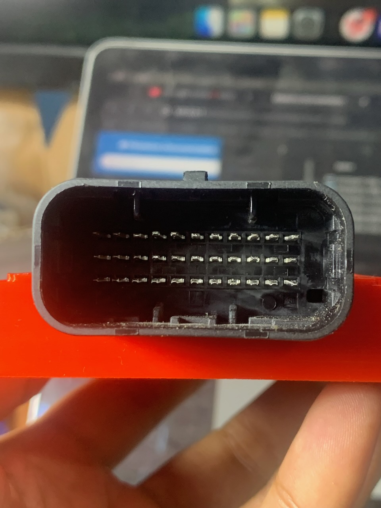

ECU Mazduino Compact (v2.2)
Gambaran Umum
ECU Mazduino Compact v2.2 adalah evolusi terbaru dari Engine Control Unit standalone 4-channel yang dirancang untuk aplikasi manajemen mesin yang serbaguna. Dibuat khusus untuk firmware rusEFI dan Speeduino, memberikan engine control komprehensif dalam paket kompak yang cocok untuk operasi 4-silinder sequential penuh atau 8-silinder paired.
Fitur Baru v2.2: - High Side Switching: Output high-side MOSFET untuk kontrol alternator, VVT, dan switching 12V lainnya - Enhanced Pin Mapping: Pin 22 konektor dialokasikan untuk output High Side - PA8 MCU Support: Kontrol high-side melalui pin MCU PA8

Fitur Utama
Core Features
- Input trigger utama untuk sensor CKP hall atau optical saja
- Input trigger kedua untuk sensor CMP hall atau optical saja
- 6 input analog (0-5V) untuk MAP, TPS, IAT, CLT, O2, dan 1 cadangan
- Knock Sensor Input: Input khusus untuk sensor knock dengan IC conditioning
- Catu daya 5V untuk sensor dengan perlindungan fuse internal
- 3 input digital pullup untuk AC Switch, VSS, Clutch (AC atau VSS dapat digunakan untuk tombol Launch Control jika tidak diperlukan)
- 6x driver low-side arus tinggi 3A: 4 injektor + Idle 1 + Idle 2 untuk high-impedance injector, idle PWM, boost control, VVT
- 5x driver low-side arus rendah untuk relay utama, pompa bahan bakar, kompresor AC, kipas, dan kontrol tachometer
- 4x output 12V atau 5V untuk sinyal koil pengapian
- NEW: 1x High Side Switching untuk kontrol alternator/VVT/12V switching
- Prosesor 168 MHz ARM Cortex-M4
- Komunikasi data via CANbus
- Komunikasi data via USB Type-C
- Komunikasi Serial RX/TX
- Konektor Yamaha 33-pin: Konektor otomotif grade profesional dengan pin assignment yang optimal
- Kartu SD untuk data logging
High Side Switching (v2.2)
- Output Type: High-side MOSFET switching
- Voltage: 12V switching capability
- Current Rating: High current handling untuk beban berat
- Applications:
- Kontrol alternator field
- Variable Valve Timing (VVT) solenoid
- High current 12V loads
- Auxiliary systems control
- MCU Control: Pin PA8 untuk kontrol PWM dan digital switching
Wiring dan Instalasi
Pin Mapping Konektor
ECU Mazduino Compact v2.2 menggunakan konektor Yamaha 33-pin dengan pin assignment sebagai berikut:

Layout Konektor
11 10 9 8 7 6 5 4 3 2 1
22 21 20 19 18 17 16 15 14 13 12
33 32 31 30 29 28 27 26 25 24 23
Pin Assignment
| Pin | Fungsi | Deskripsi |
|---|---|---|
| 1 | Injector 1 | Channel injektor 1 |
| 2 | Injector 2 | Channel injektor 2 |
| 3 | Injector 3 | Channel injektor 3 |
| 4 | Injector 4 | Channel injektor 4 |
| 5 | Idle 1 | Output kontrol idle 1 (high current 3A) |
| 6 | Tacho | Output tachometer |
| 7 | Fan | Kontrol relay kipas |
| 8 | 5V | Output referensi 5V |
| 9 | 12V | Catu daya utama |
| 10 | Main Relay | Kontrol relay utama |
| 11 | GND | Ground |
| 12 | Idle 2 | Output kontrol idle 2 (high current 3A) - dapat digunakan untuk boost/VVT |
| 13 | Ignition 4 | Channel pengapian 4 |
| 14 | Ignition 3 | Channel pengapian 3 |
| 15 | Ignition 2 | Channel pengapian 2 |
| 16 | Ignition 1 | Channel pengapian 1 |
| 17 | Fuel Pump | Kontrol relay pompa bahan bakar |
| 18 | AC Compressor | Relay kompresor AC |
| 19 | CKP | Sensor posisi crankshaft (Trigger 1) |
| 20 | GND | Ground |
| 21 | GND | Ground |
| 22 | High Side Out | Output High Side MOSFET |
| 23 | CLT | Suhu coolant |
| 24 | TPS | Sensor posisi throttle |
| 25 | O2 | Sensor oksigen |
| 26 | MAP | Tekanan absolut manifold |
| 27 | IAT | Suhu udara masuk |
| 28 | Spare Analog | Input analog cadangan |
| 29 | CMP | Sensor posisi camshaft (Trigger 2) |
| 30 | Knock Sensor | Input sensor knock dengan IC conditioning |
| 31 | AC Switch | Input switch AC (aktif ground) |
| 32 | Clutch | Input posisi kopling |
| 33 | VSS | Sensor kecepatan kendaraan |
Pin Mapping MCU
Untuk pengguna lanjutan dan pengembangan firmware, berikut adalah pin assignment STM32F407VGT6 untuk v2.2:
| Fungsi | Pin MCU |
|---|---|
| Output Pengapian 1 | PE15 |
| Output Pengapian 2 | PE14 |
| Output Pengapian 3 | PD13 |
| Output Pengapian 4 | PE5 |
| Output Injeksi 1 | PD8 |
| Output Injeksi 2 | PB15 |
| Output Injeksi 3 | PB14 |
| Output Injeksi 4 | PB13 |
| High Side Output | PA8 |
| Sensor MAP | PA0 |
| TPS | PA3 |
| Sensor IAT | PA5 |
| Sensor CLT | PA4 |
| Sensor O2 | PA1 |
| Battery/Voltage Ref | PA2 |
| Input Analog Cadangan 1 | PB1 |
| Knock Sensor | PA6 |
| Input AC | PB0 |
| Input Clutch | PE13 |
| VSS | PD7 |
| CKP | PD3 |
| CMP | PD4 |
| Tacho | PC9 |
| Relay Pompa Bahan Bakar | PC8 |
| Relay FAN | PA15 |
| Relay Kompresor AC | PC7 |
| Relay Utama | PE8 |
| Idle 1 | PD9 |
| Idle 2 | PD10 |
| TXD1 | PA9 |
| RXD1 | PA10 |
| TXD3 | PB10 |
| RXD3 | PB11 |
| TXCAN | PD1 |
| RXCAN | PD0 |
| SD CS | PD2 |
| SPI3 CLK | PC10 |
| SPI3 MISO | PC11 |
| SPI3 MOSI | PC12 |
| Launch Control Input | PE13 |
| Clutch Input | PE12 |
| VSS | PD7 |
| CKP | PD3 |
| CMP | PD4 |
| Tacho | PC9 |
| Fuel Pump Relay | PC8 |
| FAN Relay | PA15 |
| AC Compressor Relay | PC7 |
| Main Relay | PC5 |
| Idle 1 | PD10 |
| Idle 2 | PE9 |
| Stepper DIR | PD12 |
| Stepper ENBL | PD14 |
| Stepper STEP | PD15 |
| TXD1 | PA9 |
| RXD1 | PA10 |
| TXD3 | PB10 |
| RXD3 | PB11 |
| TXCAN | PD1 |
| RXCAN | PD0 |
| SD CS | PD2 |
| SPI3 CLK | PC10 |
| SPI3 MISO | PC11 |
| SPI3 MOSI | PC12 |
High Side Switching (Fitur Utama v2.2)
üîå Spesifikasi High Side Output
Karakteristik Teknis
- MCU Pin: PA8 (STM32F407VGT6)
- Connector Pin: Pin 22
- Output Type: High-side P-channel MOSFET
- Voltage Rating: 12V automotive grade
- Current Capability: High current untuk beban berat
- Control: PWM dan digital switching support
- Protection: Overcurrent dan thermal protection
Aplikasi Utama
üîß Kontrol Alternator
- Field Control: Mengatur output alternator dengan presisi
- Voltage Regulation: Kontrol tegangan charging system
- Load Management: Optimasi beban electrical system
- Battery Protection: Mencegah overcharging
⚙️ Variable Valve Timing (VVT)
- VVT Solenoid Control: Kontrol timing valve yang presisi
- Oil Pressure Control: Mengatur tekanan oli untuk VVT
- Performance Optimization: Tuning performa mesin
- Fuel Economy: Optimasi konsumsi bahan bakar
üîå 12V Switching Applications
- Auxiliary Systems: Kontrol sistem tambahan
- High Current Loads: Beban arus tinggi lainnya
- Relay Control: Alternatif untuk relay mekanis
- Custom Applications: Fungsi kustomisasi lanjutan
üí° Konfigurasi Software
TunerStudio Configuration
Output Pin: High Side (Pin 22)
MCU Assignment: PA8
Function: PWM/Digital Output
Voltage: 12V
Mode: High Side Switching
Firmware Support
- rusEFI: Dukungan penuh untuk high side switching
- Speeduino: Kompatibilitas dengan auxiliary output
- Pin Assignment: PA8 terintegrasi dalam pin mapping
- PWM Control: Frekuensi dan duty cycle adjustable
üîß Panduan Instalasi
Wiring High Side Output
- Identifikasi Pin 22: High Side Output pada konektor
- Load Connection: Hubungkan beban ke pin 22
- Ground Connection: Pastikan ground beban ke chassis
- Fuse Protection: Gunakan fuse sesuai rating beban
- Wire Gauge: Pilih kabel sesuai arus beban
Contoh Wiring Alternator
Pin 22 (High Side) → Alternator Field Terminal
Alternator Case → Vehicle Ground
ECU Ground → Vehicle Ground
Fuse: 10A (sesuai alternator spec)
Contoh Wiring VVT
Pin 22 (High Side) → VVT Solenoid (+)
VVT Solenoid (-) → Vehicle Ground
ECU Ground → Vehicle Ground
Fuse: 5A (sesuai solenoid spec)
⚠️ Perhatian Keamanan
Electrical Safety
- Fuse Protection: Selalu gunakan fuse yang sesuai
- Wire Rating: Pastikan kabel mampu menangani arus
- Ground Quality: Koneksi ground yang solid penting
- Voltage Check: Verifikasi tegangan sebelum koneksi
Installation Safety
- Power Off: Matikan power saat wiring
- Double Check: Verifikasi koneksi sebelum power-on
- Load Verification: Pastikan beban sesuai rating
- Professional Install: Konsultasi teknisi jika perlu
Dukungan dan Sumber Daya
Dokumentasi
- Datasheet STM32F407VGT6: Informasi lengkap tentang MCU
- Manual Referensi v2.2: Dokumentasi pin mapping dan high side switching
- Wiring Diagram: Diagram lengkap untuk instalasi dengan fitur v2.2
- TunerStudio Configuration: File konfigurasi siap pakai untuk rusEFI
File Firmware & Konfigurasi
- Halaman Download - Dapatkan firmware rusEFI terbaru dan file konfigurasi TunerStudio
- Dukungan penuh 4-channel dengan High Side Switching v2.2
- Konfigurasi pin mapping khusus untuk v2.2 sudah disertakan
- Kompatibel dengan firmware rusEFI
- Dukungan High Side: Konfigurasi khusus untuk PA8 high side output
Catatan Penting
Persyaratan Sistem Pengapian
- Smart Coils: Koneksi langsung didukung
- Dump Coils: IGBT eksternal diperlukan untuk operasi yang tepat
- Pemilihan Coil: Pilih jenis coil yang sesuai untuk aplikasi Anda
- Keamanan: Driver eksternal yang tepat penting untuk sistem dump coil
High Side Switching (v2.2)
- Load Compatibility: Pastikan beban kompatibel dengan 12V switching
- Current Rating: Verifikasi rating arus sesuai dengan beban
- Thermal Management: Perhatikan thermal management untuk beban tinggi
- Protection: Gunakan fuse dan protection yang memadai
Upgrade dari v2.1
- Pin 22 Change: Pin 22 sekarang untuk High Side Output
- TunerStudio Configuration: Konfigurasi pin PA8 sebagai high side output di TunerStudio
- Wiring Modification: Sesuaikan wiring jika upgrade dari v2.1
- Pin Assignment: Set PA8 untuk high side function di software TunerStudio
Fitur Khusus v2.2
Konektor Yamaha 33-pin
- Upgrade Konektor: Konektor otomotif grade profesional dengan keandalan tinggi
- Ground yang Lebih Baik: Multiple ground pins (11, 20, 21) untuk integritas sinyal
- Pin Layout Optimal: Pin assignment yang terorganisir untuk instalasi mudah
Knock Sensor Support
- Pin 30: Input khusus untuk sensor knock
- IC Conditioning: Sirkuit khusus untuk memproses sinyal knock sensor
- MCU Pin PA6: Pin khusus untuk input knock sensor
- Aplikasi: Deteksi ketukan mesin untuk perlindungan dan optimasi timing
Enhanced High Current Outputs
- 6 MOSFET High Current: Total 6 output arus tinggi 3A (4 injektor + 2 idle)
- Dual Idle Control: Idle 1 dan Idle 2 untuk kontrol idle yang presisi
- Flexible Applications: Idle 2 dapat digunakan untuk boost control, VVT, atau kontrol PWM lainnya
Solder Jumper
PCB termasuk solder jumper di bagian belakang untuk konfigurasi: - Input/Output Selection: Konfigurasi pin untuk berbagai fungsi - Pemilihan tegangan pengapian: Pilih tegangan yang sesuai untuk koil pengapian - Knock Sensor Enable: Aktivasi input knock sensor
Perbandingan Versi
| Feature | v2.1 | v2.2 |
|---|---|---|
| Core MCU | STM32F407VGT6 | STM32F407VGT6 |
| Ignition Outputs | 4x | 4x |
| Injection Outputs | 4x | 4x |
| Low Side Outputs | 5x | 5x |
| High Side Output | ❌ | ✅ Pin 22 |
| MCU Pin PA8 | Unused | High Side Control |
| CAN Bus | ✅ | ✅ |
| USB Type-C | ✅ | ✅ |
| SD Card | ✅ | ✅ |
| Knock Sensor | ✅ Pin 30 | ✅ Pin 30 |
| High Current MOSFET | 6 (4 injektor + 2 idle) | 6 (4 injektor + 2 idle) |
| Stepper Support | ✅ | ✅ |
Update v2.2: Menambahkan High Side Switching untuk kontrol alternator, VVT, dan aplikasi 12V switching lainnya melalui pin 22 konektor dan pin PA8 MCU.